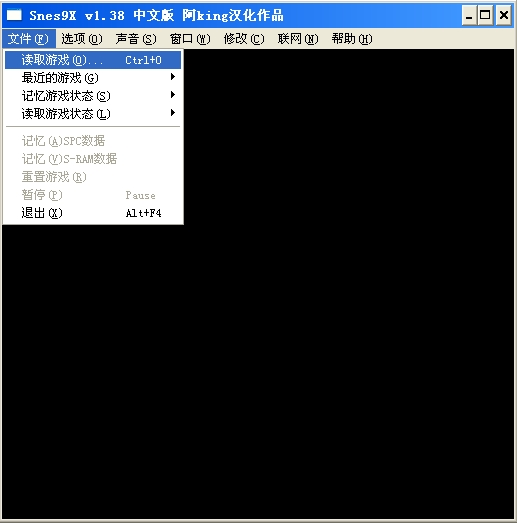
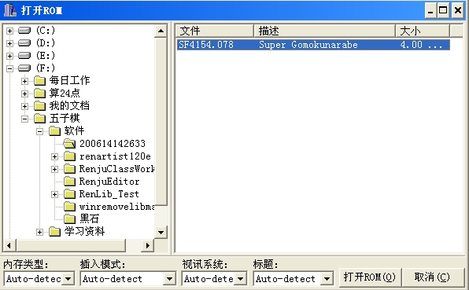
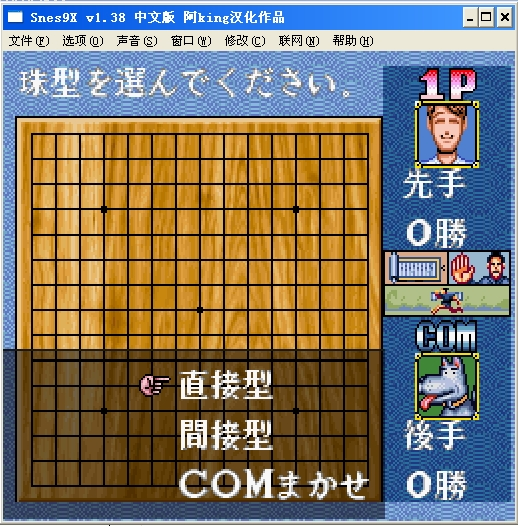

SFC超级五子棋v1.38
#1 SFC超级五子棋v1.38 作者：有志青年 发表时间：2006-1-9 12:18:32
启动模拟器，打开Sf4154.078
回车跳过启动画面
基本操作不外是回车空格方向键之类
多试试键盘就行了。
"7" 键好像是转换为鼠标控制。
Snes9X 是超级任天堂游戏系统的模拟器，他允许你在你的电脑上运行超级任天堂的游戏。
第一套五子棋人物养成冒险游戏。
本游戏以人物养成方式进行，你将扮演一名原本默默无闻的少年，在台北、东京、北京等地来回穿梭，与各种个性独特的人（包括美少女、光头力士和蒙面怪客等）切磋较量棋力。只要实力够，击败世界五子棋名人，成为举世闻名的超级五子棋王。
存盘在安装目录下新建“save"文件夹。
方法：
1、点击打开 开始运行游戏
开始运行游戏
2、菜单文件／读取游戏

3、找到文件SF454.078，选中后，点击下放的打开rom按钮

4、之后就可以开始游戏了，基本操作不外是回车空格方向键之类。
#2 Re:SFC超级五子棋v1.38 作者：我爱棋 发表时间：2008-4-28 21:31:07
谢谢啦~~~~~~
#3 Re:SFC超级五子棋v1.38 作者：岩石 发表时间：2008-8-28 9:54:32
这个好像没有冒险模式，不知道是不是我没有找到。
有对战、解题、名词解释。
有冒险模式的是DOS版本的《超级五子棋》主角名字叫伍迷。这个是任天堂的也叫《超级五子棋》。
楼主可否发一个DOS版本的《超级五子棋》，谢谢。
#4 Re:SFC超级五子棋v1.38 作者：红豆 发表时间：2008-9-23 9:58:21
有83版的 五子连珠么#5 Re:SFC超级五子棋v1.38 作者：王四海 发表时间：2009-4-16 12:12:35
杰出上面的那个不能用，就这个 能用了，谢谢！